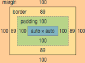

Hello, I use JavaScript.Hello, I use JavaScript.Hello, I use JavaScript.Hello, I use JavaScript. Hello, I use JavaScript.Hello, I use JavaScript.Hello, I use JavaScript.Hello, I use JavaScript. Hello, I use JavaScript.Hello, I use JavaScript.Hello, I use JavaScript.Hello, I use JavaScript. Hello, I use JavaScript.Hello, I use JavaScript.Hello, I use JavaScript.Hello, I use JavaScript.
